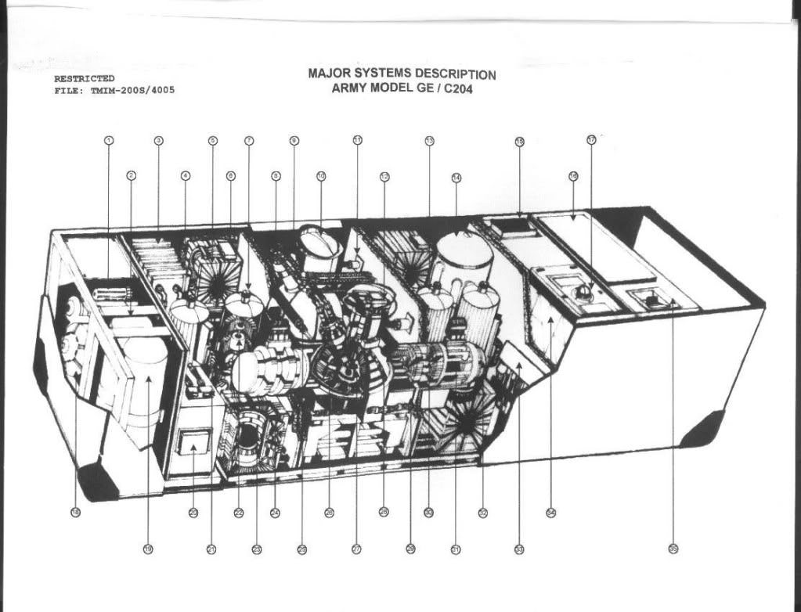

C204
John Titor - 1998-2001

CREATOR : General Electric
DATE CREATED : 2034
About C204
John Titor’s time machine, describe as a C204 gravity distortion time-displacement unit, was claimed to use two micro-singularities to produce a gravitational effect that allowed temporal displacement.